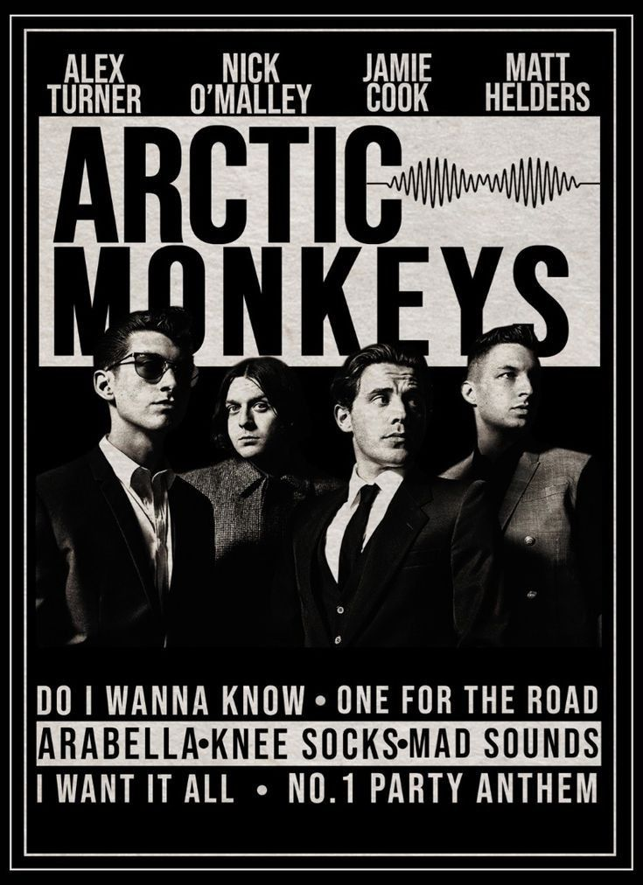
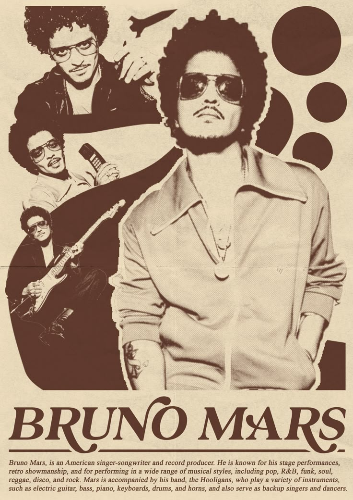
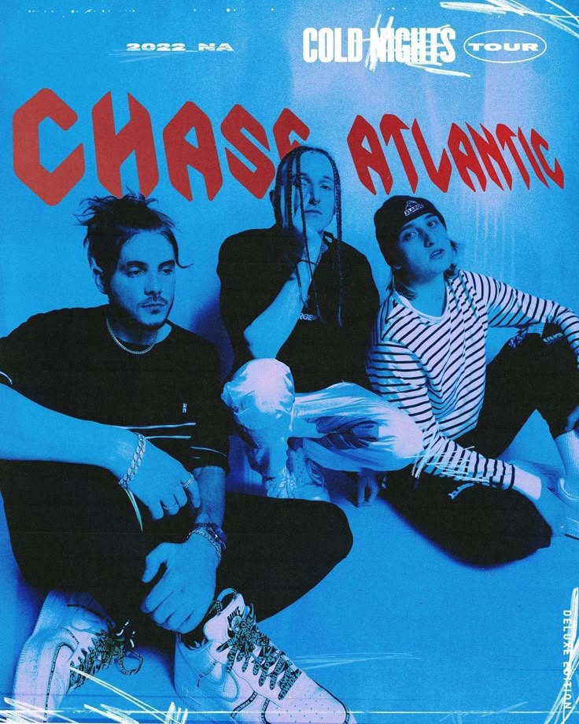

Arctic Monkeys

Arctic Monkeys are an alternative rock band from Sheffield, England, formed in 2002. The group consists of Alex Turner (vocals, guitar), Jamie Cook (guitar), Nick O'Malley (bass), and Matt Helders (drums). They are known for their sharp lyrics, Turner's distinctive vocals, and a unique blend of garage rock and indie.
Bruno Mars

Bruno Mars is an American singer, songwriter, and music producer known for his energetic stage performances, distinctive voice, and musical style that blends pop, R&B, funk, and soul. Born as Peter Gene Hernandez on October 8, 1985, in Honolulu, Hawaii, he rose to fame after releasing his debut album, Doo-Wops & Hooligans (2010), which produced hits like "Just the Way You Are" and "Grenade."
Chase Atlantic

Chase Atlantic is an Australian alternative R&B and rock band formed in 2014. The trio consists of Mitchel Cave (vocals, bass), Clinton Cave (guitar, saxophone, production), and Christian Anthony (guitar, vocals). Known for their moody, atmospheric sound, they blend elements of R&B, hip-hop, rock, and electronic music, creating a unique and hypnotic style.